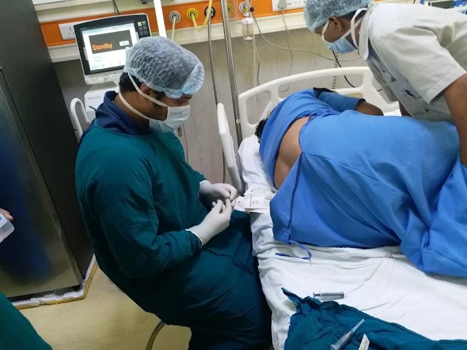

Diabetes management is rarely just about prescribing medication — it involves understanding blood sugar trends, related risk factors like hypertension and thyroid function, lifestyle constraints, and the patient's own ability to sustain a treatment plan over years. This is the space where an MD in Internal Medicine with dedicated Diabetology training makes a measurable difference, and it is the foundation of Dr. Suraj Kodak's practice at Medicos Clinic, Vishrantwadi, Pune.
Why the "MD Medicine + Diabetology" Combination Matters
Dr. Kodak holds an MBBS, an MD in Internal Medicine, and a PG Diploma in Diabetology & Clinical Training, alongside CCRJD qualification in Rheumatology. This combination allows him to look at diabetes not as an isolated condition, but as part of a patient's overall internal medicine picture — accounting for cardiovascular risk, kidney function, thyroid status and joint health, all of which commonly intersect with long-term diabetes.
"Diabetes care is not a single prescription — it's a plan that has to evolve with the patient, year after year." — Dr. Suraj Kodak
What a Diabetes Consultation Involves
- Detailed review of blood sugar history, medication and lifestyle factors
- Screening for related risks — blood pressure, thyroid, kidney function
- A realistic, individualised treatment and monitoring plan
- Clear guidance on diet, activity and home monitoring
- Scheduled follow-up to adjust treatment as needed

A Recognised Standard of Diabetes Care
This approach to diabetes and internal medicine care was recognised in August 2026, when Dr. Kodak received the Maharashtra Excellence Award 2026 as a Leading & Trusted Physician in Rheumatology, Diabetes and Internal Medicine Care — a title that specifically acknowledged his contribution to diabetes management in Pune.
For patients in Vishrantwadi, Dhanori, Lohgaon and surrounding areas of Pune managing diabetes — whether newly diagnosed or looking for a more structured, long-term approach — Dr. Kodak's MD Medicine background and dedicated diabetology training offer a level of clinical depth that supports better outcomes over time.
Take a structured approach to diabetes management.
Book a consultation with Dr. Suraj Kodak at Medicos Clinic.